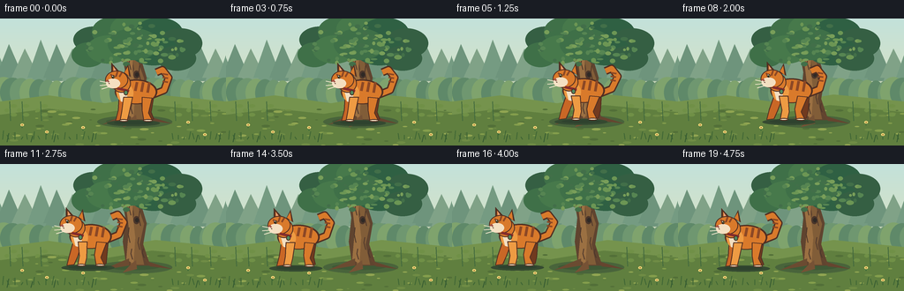
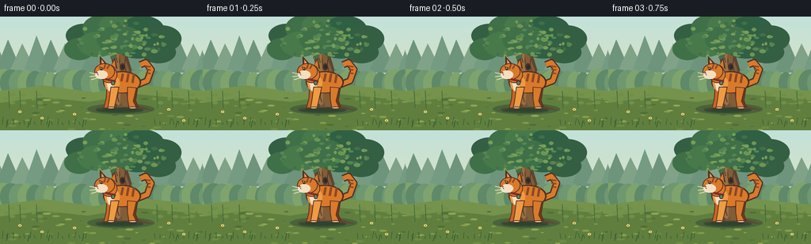

CODING AGENTS AS PIXEL WORLD MODELS
traex/GPT-5.6-Sol · instance_preservation_0054
点击播放 · 原生 RGB 像素
逐轮保存的候选
回放视频、检查图与代码变化。
每份候选均可单独播放。实际图片检查记录在下方工具轨迹中。
候选 01播放与检查图
点击播放 · 原生 RGB 像素


展开代码变化
--- 上一保存版本
+++ 本次保存版本
@@ -0,0 +1,211 @@
+from pathlib import Path
+import math
+import numpy as np
+from PIL import Image, ImageDraw, ImageFilter
+import artifact_io
+
+W, H, N = 256, 144, 20
+S = 4
+SW, SH = W*S, H*S
+rng = np.random.default_rng(5401)
+
+def sc(v): return int(round(v*S))
+def box(b): return tuple(sc(v) for v in b)
+def pts(p): return [(sc(x), sc(y)) for x,y in p]
+
+def ellipse(d, b, fill, outline=None, width=1):
+ x0,y0,x1,y1=b
+ b=(min(x0,x1),min(y0,y1),max(x0,x1),max(y0,y1))
+ d.ellipse(box(b), fill=fill, outline=outline, width=sc(width) if outline else 1)
+def polygon(d, p, fill, outline=None, width=1):
+ d.polygon(pts(p), fill=fill)
+ if outline: d.line(pts(p+[p[0]]), fill=outline, width=sc(width), joint='curve')
+def line(d, p, fill, width=1, joint='curve'):
+ d.line(pts(p), fill=fill, width=sc(width), joint=joint)
+def rounded(d, b, r, fill, outline=None, width=1):
+ d.rounded_rectangle(box(b), radius=sc(r), fill=fill, outline=outline, width=sc(width))
+
+# Static background at supersampled resolution.
+def make_background():
+ im = Image.new('RGB', (SW, SH), '#b9d9d3')
+ d = ImageDraw.Draw(im)
+ # quiet dawn sky gradient
+ for y in range(SH):
+ yy = y / SH
+ c = tuple(int(a*(1-yy)+b*yy) for a,b in zip((195,225,218),(232,226,179)))
+ d.line([(0,y),(SW,y)], fill=c)
+ # far forest silhouettes
+ for i in range(16):
+ x = i*18 - 8
+ peak = 30 + (i%4)*5
+ col = ['#759b82','#6e947c','#80a287'][i%3]
+ polygon(d, [(x-20,94),(x,peak),(x+22,94)], col)
+ polygon(d, [(x-15,67),(x,24+(i%3)*5),(x+17,68)], col)
+ # mist band
+ d.rectangle(box((0,71,256,103)), fill='#c5d3b7')
+ # distant shrubs
+ for i in range(28):
+ x = i*10-6
+ r = 8 + (i*7)%8
+ ellipse(d,(x-r,76-r*.65,x+r,98+r*.18), ['#6f9770','#7fa36d','#5f8969'][i%3])
+ # meadow layers
+ polygon(d, [(0,94),(55,87),(119,96),(176,86),(256,94),(256,144),(0,144)], '#75934d')
+ polygon(d, [(0,109),(55,102),(111,108),(172,98),(256,106),(256,144),(0,144)], '#607f3f')
+ # dappled ground patches
+ for i in range(65):
+ x=float(rng.uniform(0,256)); y=float(rng.uniform(102,145)); rx=float(rng.uniform(1.3,5))
+ col=['#6f8c45','#849e4c','#526f38','#91a552'][i%4]
+ ellipse(d,(x-rx,y-rx*.25,x+rx,y+rx*.25),col)
+ # background plants
+ for x in [12,26,47,199,218,239]:
+ line(d,[(x,116),(x-1,94)],'#436a3e',1)
+ for k in range(3):
+ yy=99+k*5
+ side=-1 if k%2 else 1
+ ellipse(d,(x-1+side*1,yy-2,x+side*7,yy+2),'#709047')
+ # tree ground shadow, fixed
+ ellipse(d,(110,110,195,124),'#49643b')
+ ellipse(d,(120,113,181,120),'#3f5936')
+ # Main trunk, broad and unmistakable
+ polygon(d,[(143,115),(139,88),(142,61),(137,35),(150,18),(158,19),(160,47),(166,67),(162,91),(170,115)],'#60442f')
+ polygon(d,[(148,114),(147,80),(152,57),(148,31),(154,21),(159,23),(157,51),(163,68),(158,91),(163,114)],'#815d38')
+ polygon(d,[(143,108),(146,74),(143,49),(147,31),(151,22),(150,57),(153,83),(151,113)],'#9b7042')
+ # roots
+ polygon(d,[(146,107),(146,115),(116,120),(136,111)],'#6b4b31')
+ polygon(d,[(161,105),(170,116),(195,119),(169,111)],'#65452f')
+ polygon(d,[(154,109),(155,119),(139,123),(150,112)],'#765235')
+ # bark lines and knots
+ for x,y,l in [(147,43,15),(158,53,17),(146,72,17),(157,83,14),(149,96,12),(162,96,10)]:
+ line(d,[(x,y),(x-1,y+l*.45),(x+1,y+l)],'#4d372b',1)
+ ellipse(d,(151,59,158,68),'#4a352a'); ellipse(d,(153,61,157,66),'#2f2925')
+ # branching crown skeleton
+ branches=[[(150,42),(132,28),(113,22)],[(153,37),(169,24),(189,19)],[(158,48),(181,40),(203,40)],[(145,48),(126,40),(105,39)]]
+ for p in branches:
+ line(d,p,'#63442e',7); line(d,p,'#91663c',2)
+ # foliage blobs behind/around branches
+ blobs=[(106,24,23,15),(128,15,24,17),(153,12,28,18),(180,16,27,17),(204,28,25,17),
+ (100,41,19,14),(123,35,25,16),(174,36,28,17),(200,45,22,14),(151,29,29,18)]
+ for j,(x,y,rx,ry) in enumerate(blobs):
+ base=['#355f43','#3f7048','#47794b','#2f6043'][j%4]
+ ellipse(d,(x-rx,y-ry,x+rx,y+ry),base)
+ # leaf highlights
+ for i in range(92):
+ a=float(rng.uniform(0,math.tau)); rr=float(rng.uniform(0,1))**.5
+ cx=153+math.cos(a)*58*rr; cy=29+math.sin(a)*24*rr
+ if 88<cx<218 and 5<cy<56:
+ rx=float(rng.uniform(1.5,4.2)); ry=float(rng.uniform(1,2.6))
+ col=['#568552','#6c9654','#789e59','#426f49'][i%4]
+ ellipse(d,(cx-rx,cy-ry,cx+rx,cy+ry),col)
+ # foreground grass blades, but don't cover cat yet (same static layer)
+ for x in list(range(3,110,7))+list(range(196,256,6)):
+ h=3+(x*13)%8
+ line(d,[(x,137),(x-2+(x%5),137-h)],'#3f6635',1)
+ # tiny flowers
+ for x,y in [(25,120),(53,128),(213,117),(232,131),(94,123)]:
+ line(d,[(x,y+4),(x,y)],'#3e6c39',1)
+ ellipse(d,(x-2,y-1,x+2,y+2),'#f0d878')
+ ellipse(d,(x-.6,y,x+.6,y+1.2),'#9b6a31')
+ return im
+
+BG = make_background()
+
+def draw_cat(frame, cx, gait, bob, stopped=False):
+ im=frame
+ d=ImageDraw.Draw(im)
+ ground=116+bob
+ # moving soft shadow
+ ellipse(d,(cx-32,ground-1,cx+28,ground+6),'#354a31')
+ ellipse(d,(cx-24,ground,cx+20,ground+4),'#2e422e')
+ dark='#713a1f'; edge='#512f22'; orange='#d97a2b'; light='#ee9b43'; cream='#f4dfc1'; stripe='#8c4825'
+ # Tail behind body: same long curled tail every frame, gently sways.
+ sway=2.0*math.sin(gait*.5)
+ tail=[(cx+18,ground-29),(cx+33,ground-35),(cx+38+sway,ground-49),(cx+31+sway,ground-58),(cx+24+sway,ground-55)]
+ line(d,tail,edge,9); line(d,tail,orange,6)
+ # tail rings
+ for q in [0.30,0.52,0.72]:
+ # approximate ring strokes at stable upper tail positions
+ tx=cx+34+sway*(q-.2); ty=ground-39-q*20
+ line(d,[(tx-3,ty),(tx+3,ty+1)],stripe,2)
+ # hind legs behind body (animated stride)
+ stride=0 if stopped else math.sin(gait)*5.3
+ # far rear leg
+ hx=cx+13-stride*.35
+ polygon(d,[(cx+8,ground-30),(cx+21,ground-28),(hx+5,ground-10),(hx+8+stride,ground-2),(hx+1+stride,ground),(hx-4,ground-12)],dark,edge,1)
+ # far front leg
+ fx=cx-14+stride
+ polygon(d,[(cx-18,ground-29),(cx-8,ground-28),(fx+4,ground-10),(fx,ground-1),(fx-8,ground),(fx-5,ground-12)],'#c96726',edge,1)
+ # body pear shape
+ ellipse(d,(cx-23,ground-47,cx+25,ground-19),edge)
+ ellipse(d,(cx-21.5,ground-45.5,cx+23,ground-20),orange)
+ # shoulder/chest highlight
+ ellipse(d,(cx-21,ground-42,cx-2,ground-21),light)
+ polygon(d,[(cx-20,ground-38),(cx-10,ground-35),(cx-8,ground-20),(cx-16,ground-22)],cream)
+ # tabby back stripes
+ for dx,tilt in [(2,1),(9,2),(16,3)]:
+ line(d,[(cx+dx,ground-44),(cx+dx-2,ground-35+tilt)],stripe,3)
+ # near legs, gait opposition
+ fx2=cx-11-stride
+ polygon(d,[(cx-13,ground-27),(cx-3,ground-27),(fx2+4,ground-9),(fx2+2,ground-1),(fx2-6,ground),(fx2-4,ground-11)],light,edge,1)
+ ellipse(d,(fx2-7,ground-2,fx2+3,ground+1),cream,edge,1)
+ hx2=cx+14+stride*.65
+ polygon(d,[(cx+8,ground-27),(cx+19,ground-26),(hx2+1,ground-9),(hx2+5,ground-1),(hx2-4,ground),(hx2-6,ground-12)],orange,edge,1)
+ ellipse(d,(hx2-5,ground-2,hx2+6,ground+1),cream,edge,1)
+ # neck and head, facing left
+ ellipse(d,(cx-26,ground-53,cx-5,ground-32),orange,edge,1)
+ # ears, outlined; left ear larger due to profile
+ polygon(d,[(cx-27,ground-48),(cx-27,ground-66),(cx-17,ground-55)],edge)
+ polygon(d,[(cx-25.2,ground-51),(cx-25,ground-62),(cx-19,ground-54)],orange)
+ polygon(d,[(cx-13,ground-54),(cx-8,ground-64),(cx-5,ground-50)],edge)
+ polygon(d,[(cx-12,ground-55),(cx-8.5,ground-61),(cx-7,ground-51)],orange)
+ polygon(d,[(cx-24,ground-56),(cx-24.3,ground-61),(cx-21,ground-56)],'#e7a07e')
+ # face mask and muzzle
+ ellipse(d,(cx-34,ground-57,cx-8,ground-36),orange,edge,1)
+ ellipse(d,(cx-33,ground-48,cx-17,ground-37),cream)
+ # brow stripes uniquely preserved
+ line(d,[(cx-20,ground-56),(cx-22,ground-50)],stripe,2)
+ line(d,[(cx-15,ground-55),(cx-18,ground-50)],stripe,2)
+ line(d,[(cx-28,ground-53),(cx-25,ground-50)],stripe,2)
+ # eye, nose, mouth
+ ellipse(d,(cx-27,ground-52,cx-23,ground-48),'#f3d14e',edge,1)
+ ellipse(d,(cx-25.8,ground-51.5,cx-24.5,ground-48.5),'#18231b')
+ polygon(d,[(cx-34,ground-45),(cx-31,ground-47),(cx-29,ground-44)],'#a54e45')
+ line(d,[(cx-31,ground-44),(cx-29,ground-42)],edge,1)
+ # whiskers
+ line(d,[(cx-30,ground-43),(cx-40,ground-45)],'#f8ebd1',1)
+ line(d,[(cx-29,ground-41),(cx-40,ground-40)],'#f8ebd1',1)
+ line(d,[(cx-28,ground-39),(cx-38,ground-36)],'#f8ebd1',1)
+ # red collar + signature green tag
+ line(d,[(cx-20,ground-37),(cx-7,ground-34)],'#852d2c',3)
+ ellipse(d,(cx-13,ground-35,cx-8,ground-29),'#d8b541',edge,1)
+ ellipse(d,(cx-12,ground-34,cx-9,ground-30),'#4f8b61')
+ # small reflected highlight
+ ellipse(d,(cx-26.1,ground-51.2,cx-25.2,ground-50.3),'white')
+
+frames=[]
+for i in range(N):
+ # hold clearly in front, travel, then hold clearly to left
+ if i <= 3:
+ u=0.0
+ elif i >= 16:
+ u=1.0
+ else:
+ raw=(i-3)/13.0
+ u=raw*raw*(3-2*raw)
+ cx=153*(1-u)+76*u
+ walking=(i>3 and i<17)
+ gait=(i-3)*math.pi*0.72 if walking else 0.0
+ bob=(-abs(math.sin(gait))*1.4 if walking else (0.35*math.exp(-(i-16)) if i>=16 else 0))
+ fr=BG.copy()
+ draw_cat(fr,cx,gait,bob,stopped=not walking)
+ # a few sharp foreground grass tips in front of paws for integration
+ dd=ImageDraw.Draw(fr)
+ for gx in [8,35,61,104,222,248]:
+ line(dd,[(gx,140),(gx+2,130+(gx%4))],'#355a31',1)
+ fr=fr.resize((W,H),Image.Resampling.LANCZOS)
+ # subtle cinematic color consistency
+ arr=np.asarray(fr,dtype=np.uint8)
+ frames.append(arr)
+
+frames=np.stack(frames).astype(np.uint8)
+artifact_io.save(frames, Path(__file__).resolve().parent)
+print('saved', frames.shape, frames.dtype)
可观测工具轨迹
实际执行的命令与返回图片。
命令 1exit 0
/bin/bash -lc "cat prompt.txt && printf '\\n--- RULES ---\\n' && cat GENERATION_RULES.md && printf '\\n--- SPEC ---\\n' && cat task_spec.json"
命令 2exit 0
/bin/bash -lc "find . -maxdepth 2 -type f -printf '%p\\n' | sort && printf '\\n--- tools ---\\n' && command -v ffmpeg || true && command -v blender || true && command -v python3 || true"
命令 3exit 0
/bin/bash -lc 'cat artifact_io.py'
命令 4exit 2
/bin/bash -lc "cat > generate.py <<'PY'
from pathlib import Path
import math
import numpy as np
from PIL import Image, ImageDraw, ImageFilter
import artifact_io
W, H, N = 256, 144, 20
S = 4
SW, SH = W*S, H*S
rng = np.random.default_rng(5401)
def sc(v): return int(round(v*S))
def box(b): return tuple(sc(v) for v in b)
def pts(p): return [(sc(x), sc(y)) for x,y in p]
def ellipse(d, b, fill, outline=None, width=1):
d.ellipse(box(b), fill=fill, outline=outline, width=sc(width) if outline else 1)
def polygon(d, p, fill, outline=None, width=1):
d.polygon(pts(p), fill=fill)
if outline: d.line(pts(p+[p[0]]), fill=outline, width=sc(width), joint='curve')
def line(d, p, fill, width=1, joint='curve'):
d.line(pts(p), fill=fill, width=sc(width), joint=joint)
def rounded(d, b, r, fill, outline=None, width=1):
d.rounded_rectangle(box(b), radius=sc(r), fill=fill, outline=outline, width=sc(width))
# Static background at supersampled resolution.
def make_background():
im = Image.new('RGB', (SW, SH), '#b9d9d3')
d = ImageDraw.Draw(im)
# quiet dawn sky gradient
for y in range(SH):
yy = y / SH
c = tuple(int(a*(1-yy)+b*yy) for a,b in zip((195,225,218),(232,226,179)))
d.line([(0,y),(SW,y)], fill=c)
# far forest silhouettes
for i in range(16):
x = i*18 - 8
peak = 30 + (i%4)*5
col = ['#759b82','#6e947c','#80a287'][i%3]
polygon(d, [(x-20,94),(x,peak),(x+22,94)], col)
polygon(d, [(x-15,67),(x,24+(i%3)*5),(x+17,68)], col)
# mist band
d.rectangle(box((0,71,256,103)), fill='#c5d3b7')
# distant shrubs
for i in range(28):
x = i*10-6
r = 8 + (i*7)%8
ellipse(d,(x-r,76-r*.65,x+r,98+r*.18), ['#6f9770','#7fa36d','#5f8969'][i%3])
# meadow layers
polygon(d, [(0,94),(55,87),(119,96),(176,86),(256,94),(256,144),(0,144)], '#75934d')
polygon(d, [(0,109),(55,102),(111,108),(172,98),(256,106),(256,144),(0,144)], '#607f3f')
# dappled ground patches
for i in range(65):
x=float(rng.uniform(0,256)); y=float(rng.uniform(102,145)); rx=float(rng.uniform(1.3,5))
col=['#6f8c45','#849e4c','#526f38','#91a552'][i%4]
ellipse(d,(x-rx,y-rx*.25,x+rx,y+rx*.25),col)
# background plants
for x in [12,26,47,199,218,239]:
line(d,[(x,116),(x-1,94)],'#436a3e',1)
for k in range(3):
yy=99+k*5
side=-1 if k%2 else 1
ellipse(d,(x-1+side*1,yy-2,x+side*7,yy+2),'#709047')
# tree ground shadow, fixed
ellipse(d,(110,110,195,124),'#49643b')
ellipse(d,(120,113,181,120),'#3f5936')
# Main trunk, broad and unmistakable
polygon(d,[(143,115),(139,88),(142,61),(137,35),(150,18),(158,19),(160,47),(166,67),(162,91),(170,115)],'#60442f')
polygon(d,[(148,114),(147,80),(152,57),(148,31),(154,21),(159,23),(157,51),(163,68),(158,91),(163,114)],'#815d38')
polygon(d,[(143,108),(146,74),(143,49),(147,31),(151,22),(150,57),(153,83),(151,113)],'#9b7042')
# roots
polygon(d,[(146,107),(146,115),(116,120),(136,111)],'#6b4b31')
polygon(d,[(161,105),(170,116),(195,119),(169,111)],'#65452f')
polygon(d,[(154,109),(155,119),(139,123),(150,112)],'#765235')
# bark lines and knots
for x,y,l in [(147,43,15),(158,53,17),(146,72,17),(157,83,14),(149,96,12),(162,96,10)]:
line(d,[(x,y),(x-1,y+l*.45),(x+1,y+l)],'#4d372b',1)
ellipse(d,(151,59,158,68),'#4a352a'); ellipse(d,(153,61,157,66),'#2f2925')
# branching crown skeleton
branches=[[(150,42),(132,28),(113,22)],[(153,37),(169,24),(189,19)],[(158,48),(181,40),(203,40)],[(145,48),(126,40),(105,39)]]
for p in branches:
line(d,p,'#63442e',7); line(d,p,'#91663c',2)
# foliage blobs behind/around branches
blobs=[(106,24,23,15),(128,15,24,17),(153,12,28,18),(180,16,27,17),(204,28,25,17),
(100,41,19,14),(123,35,25,16),(174,36,28,17),(200,45,22,14),(151,29,29,18)]
for j,(x,y,rx,ry) in enumerate(blobs):
base=['#355f43','#3f7048','#47794b','#2f6043'][j%4]
ellipse(d,(x-rx,y-ry,x+rx,y+ry),base)
# leaf highlights
for i in range(92):
a=float(rng.uniform(0,math.tau)); rr=float(rng.uniform(0,1))**.5
cx=153+math.cos(a)*58*rr; cy=29+math.sin(a)*24*rr
if 88<cx<218 and 5<cy<56:
rx=float(rng.uniform(1.5,4.2)); ry=float(rng.uniform(1,2.6))
col=['#568552','#6c9654','#789e59','#426f49'][i%4]
ellipse(d,(cx-rx,cy-ry,cx+rx,cy+ry),col)
# foreground grass blades, but don't cover cat yet (same static layer)
for x in list(range(3,110,7))+list(range(196,256,6)):
h=3+(x*13)%8
line(d,[(x,137),(x-2+(x%5),137-h)],'#3f6635',1)
# tiny flowers
for x,y in [(25,120),(53,128),(213,117),(232,131),(94,123)]:
line(d,[(x,y+4),(x,y)],'#3e6c39',1)
ellipse(d,(x-2,y-1,x+2,y+2),'#f0d878')
ellipse(d,(x-.6,y,x+.6,y+1.2),'#9b6a31')
return im
BG = make_background()
def draw_cat(frame, cx, gait, bob, stopped=False):
im=frame
d=ImageDraw.Draw(im)
ground=116+bob
# moving soft shadow
ellipse(d,(cx-32,ground-1,cx+28,ground+6),'#354a31')
ellipse(d,(cx-24,ground,cx+20,ground+4),'#2e422e')
dark='#713a1f'; edge='#512f22'; orange='#d97a2b'; light='#ee9b43'; cream='#f4dfc1'; stripe='#8c4825'
# Tail behind body: same long curled tail every frame, gently sways.
sway=2.0*math.sin(gait*.5)
tail=[(cx+18,ground-29),(cx+33,ground-35),(cx+38+sway,ground-49),(cx+31+sway,ground-58),(cx+24+sway,ground-55)]
line(d,tail,edge,9); line(d,tail,orange,6)
# tail rings
for q in [0.30,0.52,0.72]:
# approximate ring strokes at stable upper tail positions
tx=cx+34+sway*(q-.2); ty=ground-39-q*20
line(d,[(tx-3,ty),(tx+3,ty+1)],stripe,2)
# hind legs behind body (animated stride)
stride=0 if stopped else math.sin(gait)*5.3
# far rear leg
hx=cx+13-stride*.35
polygon(d,[(cx+8,ground-30),(cx+21,ground-28),(hx+5,ground-10),(hx+8+stride,ground-2),(hx+1+stride,ground),(hx-4,ground-12)],dark,edge,1)
# far front leg
fx=cx-14+stride
polygon(d,[(cx-18,ground-29),(cx-8,ground-28),(fx+4,ground-10),(fx,ground-1),(fx-8,ground),(fx-5,ground-12)],'#c96726',edge,1)
# body pear shape
ellipse(d,(cx-23,ground-47,cx+25,ground-19),edge)
ellipse(d,(cx-21.5,ground-45.5,cx+23,ground-20),orange)
# shoulder/chest highlight
ellipse(d,(cx-21,ground-42,cx-2,ground-21),light)
polygon(d,[(cx-20,ground-38),(cx-10,ground-35),(cx-8,ground-20),(cx-16,ground-22)],cream)
# tabby back stripes
for dx,tilt in [(2,1),(9,2),(16,3)]:
line(d,[(cx+dx,ground-44),(cx+dx-2,ground-35+tilt)],stripe,3)
# near legs, gait opposition
fx2=cx-11-stride
polygon(d,[(cx-13,ground-27),(cx-3,ground-27),(fx2+4,ground-9),(fx2+2,ground-1),(fx2-6,ground),(fx2-4,ground-11)],light,edge,1)
ellipse(d,(fx2-7,ground-2,fx2+3,ground+1),cream,edge,1)
hx2=cx+14+stride*.65
polygon(d,[(cx+8,ground-27),(cx+19,ground-26),(hx2+1,ground-9),(hx2+5,ground-1),(hx2-4,ground),(hx2-6,ground-12)],orange,edge,1)
ellipse(d,(hx2-5,ground-2,hx2+6,ground+1),cream,edge,1)
# neck and head, facing left
ellipse(d,(cx-26,ground-53,cx-5,ground-32),orange,edge,1)
# ears, outlined; left ear larger due to profile
polygon(d,[(cx-27,ground-48),(cx-27,ground-66),(cx-17,ground-55)],edge)
polygon(d,[(cx-25.2,ground-51),(cx-25,ground-62),(cx-19,ground-54)],orange)
polygon(d,[(cx-13,ground-54),(cx-8,ground-64),(cx-5,ground-50)],edge)
polygon(d,[(cx-12,ground-55),(cx-8.5,ground-61),(cx-7,ground-51)],orange)
polygon(d,[(cx-24,ground-56),(cx-24.3,ground-61),(cx-21,ground-56)],'#e7a07e')
# face mask and muzzle
ellipse(d,(cx-34,ground-57,cx-8,ground-36),orange,edge,1)
ellipse(d,(cx-33,ground-48,cx-17,ground-37),cream)
# brow stripes uniquely preserved
line(d,[(cx-20,ground-56),(cx-22,ground-50)],stripe,2)
line(d,[(cx-15,ground-55),(cx-18,ground-50)],stripe,2)
line(d,[(cx-28,ground-53),(cx-25,ground-50)],stripe,2)
# eye, nose, mouth
ellipse(d,(cx-27,ground-52,cx-23,ground-48),'#f3d14e',edge,1)
ellipse(d,(cx-25.8,ground-51.5,cx-24.5,ground-48.5),'#18231b')
polygon(d,[(cx-34,ground-45),(cx-31,ground-47),(cx-29,ground-44)],'#a54e45')
line(d,[(cx-31,ground-44),(cx-29,ground-42)],edge,1)
# whiskers
line(d,[(cx-30,ground-43),(cx-40,ground-45)],'#f8ebd1',1)
line(d,[(cx-29,ground-41),(cx-40,ground-40)],'#f8ebd1',1)
line(d,[(cx-28,ground-39),(cx-38,ground-36)],'#f8ebd1',1)
# red collar + signature green tag
line(d,[(cx-20,ground-37),(cx-7,ground-34)],'#852d2c',3)
ellipse(d,(cx-13,ground-35,cx-8,ground-29),'#d8b541',edge,1)
ellipse(d,(cx-12,ground-34,cx-9,ground-30),'#4f8b61')
# small reflected highlight
ellipse(d,(cx-26.1,ground-51.2,cx-25.2,ground-50.3),'white')
frames=[]
for i in range(N):
# hold clearly in front, travel, then hold clearly to left
if i <= 3:
u=0.0
elif i >= 16:
u=1.0
else:
raw=(i-3)/13.0
u=raw*raw*(3-2*raw)
cx=153*(1-u)+76*u
walking=(i>3 and i<17)
gait=(i-3)*math.pi*0.72 if walking else 0.0
bob=(-abs(math.sin(gait))*1.4 if walking else (0.35*math.exp(-(i-16)) if i>=16 else 0))
fr=BG.copy()
draw_cat(fr,cx,gait,bob,stopped=not walking)
# a few sharp foreground grass tips in front of paws for integration
dd=ImageDraw.Draw(fr)
for gx in [8,35,61,104,222,248]:
line(dd,[(gx,140),(gx+2,130+(gx%4))],'#355a31',1)
fr=fr.resize((W,H),Image.Resampling.LANCZOS)
# subtle cinematic color consistency
arr=np.asarray(fr,dtype=np.uint8)
frames.append(arr)
frames=np.stack(frames).astype(np.uint8)
artifact_io.save(frames, Path(__file__).resolve().parent)
print('saved', frames.shape, frames.dtype)
PY
python3 generate.py
ls -lh pixels.npz inspection.png index.html frames/00.png frames/19.png"命令 5exit 0
/bin/bash -lc "python3 - <<'PY' p='generate.py' s=open(p).read() s=s.replace(\"def ellipse(d, b, fill, outline=None, width=1):\\n d.ellipse(box(b), fill=fill, outline=outline, width=sc(width) if outline else 1)\", \"def ellipse(d, b, fill, outline=None, width=1):\\n x0,y0,x1,y1=b\\n b=(min(x0,x1),min(y0,y1),max(x0,x1),max(y0,y1))\\n d.ellipse(box(b), fill=fill, outline=outline, width=sc(width) if outline else 1)\") open(p,'w').write(s) PY python3 generate.py ls -lh pixels.npz inspection.png transition_check.png index.html frames/00.png frames/19.png"
命令 6exit 0
/bin/bash -lc "python3 - <<'PY'
import numpy as np
from PIL import Image
z=np.load('pixels.npz')['pixels']
assert z.shape==(144,256,20)
for i in range(20):
im=Image.open(f'frames/{i:02d}.png')
assert im.mode=='RGB' and im.size==(256,144)
# verify intentional holds and motion
f=np.stack([np.asarray(Image.open(f'frames/{i:02d}.png')) for i in range(20)])
print('RGB validation OK; mean frame deltas:', [round(float(np.abs(f[i].astype(int)-f[i-1]).mean()),2) for i in range(1,20)])
print('unique frames',len({x.tobytes() for x in f}))
PY
python3 -m py_compile generate.py"保存候选 1 份；完成命令 6 次；可验证图片返回 0 张。原始 API 响应与完整日志保留在本地。